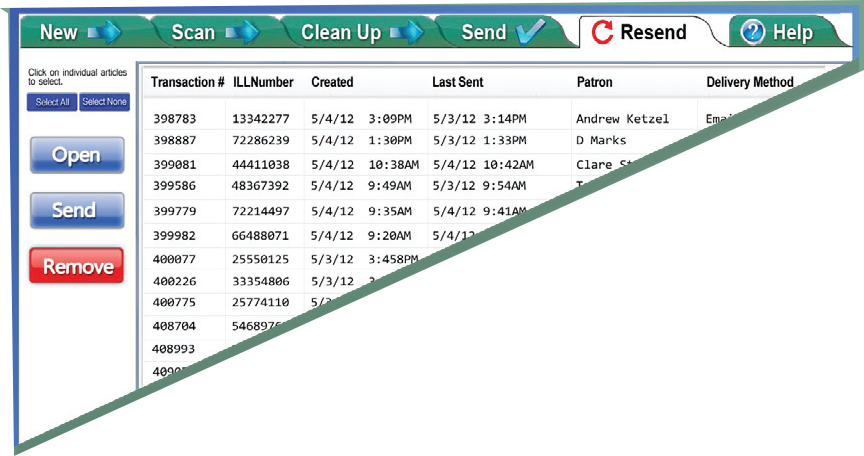

BSCAN ILL Capture Workflow
Improves Quality & Performance, Reduces Errors and Simplifies Identify Article & RequestorBSCAN ILL automatically captures data directly from pull slips – less keying means fewer keying errors
BSCAN ILL reads the requestor's name, the delivery method, and IP address from the pull slip and uses this information to automatically route the electronic document to the appropriate document delivery software. After the article is sent, BSCAN ILL updates your document delivery software automatically. No extra keystrokes are necessary.
Scan ArticleScan two pages at a time, using the keyboard to delete unwanted pages. An optional foot pedal is available for even faster scanning. Once scanned, the article is passed to the auto- matic image treatment stage.
Automatic Image TreatmentBSCAN ILL automatically locates the content on each page, clips the content, creates a preset margin for consistency, and deskews and corrects curvature when necessary. When completed, the treated article images are passed on to the manual review stage.
Manual Review & CorrectionThis stage can be run after each article is scanned, or for greater efficiency, several articles can be scanned in sequence, automatically treated, queued up in this stage and reviewed at one time.
Send & RouteEach article is automatically sent via the delivery method specified. If an ILL de- partment is using ILLiad and Odyssey to track completion and perform billing-relat- ed operations, BSCAN ILL can be config- ured to notify Odyssey that the article was sent even if it wasn't sent by Odyssey.
 ResendBSCAN ILL is capable of storing articles for a configurable number of days after they're sent. If an article must be resent, it can be opened and sent right away or be edited first, for example by adding or deleting pages.